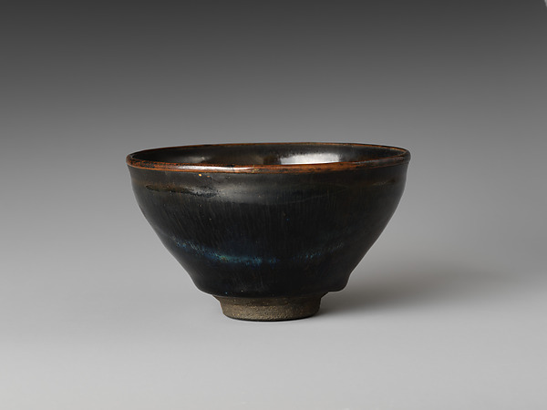
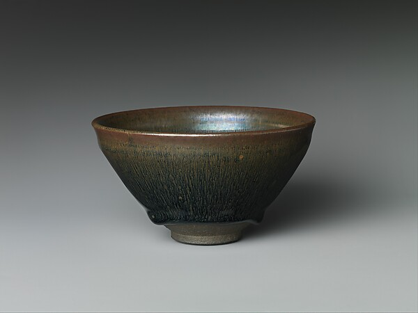

宋 · 茶具
宋代是从煎茶到点茶的革命期。斗茶之风盛行，黑釉建盏与青白瓷执壶分庭抗礼。蔡襄《茶录》与徽宗《大观茶论》将茶具审美推向极致。
建窑 · 黑釉
Southern School

兔毫盏
建窑黑釉茶盏以兔毫纹最为著名。釉面在高温下析出铁结晶，形成如兔毫般细密纹理。斗茶时白色茶沫在黑色盏壁上格外分明，故蔡襄言"茶色白，宜黑盏"。

曜变天目
建窑极品，釉面呈现如宇宙星云般的七彩光斑，存世仅三件完整器，均在日本被列为国宝。每只曜变盏的斑纹独一无二，是宋代陶瓷偶然之美的最高体现。
景德镇 · 青白瓷
Northern Elegance

青白瓷执壶
景德镇青白瓷釉色介于青白之间，称"影青"或"映青"。执壶长流、曲柄、瓜棱腹，薄胎透光，釉面如冰似玉。李清照词中"玉枕纱橱"或即影青瓷枕。

青白瓷茶臼
宋代点茶需先将茶饼碾成细末，茶臼即为研茶工具。青白瓷茶臼内壁无釉以利研磨，外壁施青白釉，器型端庄、重心沉稳，是实用与审美结合的典范。